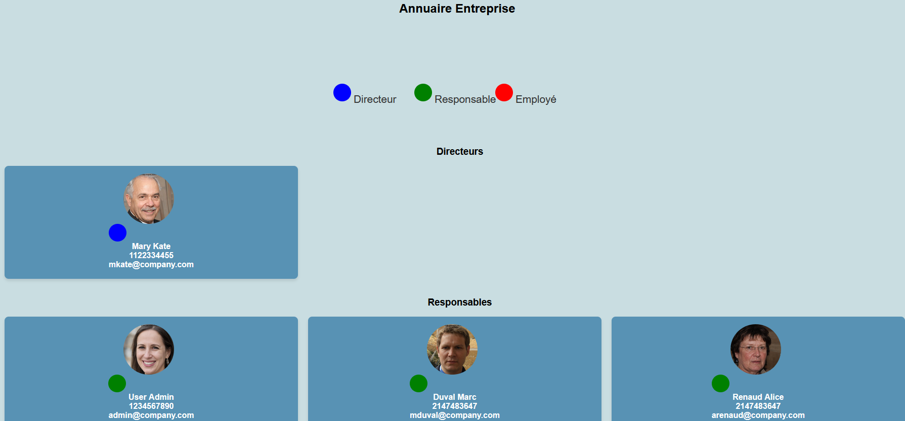

L'objectif de cette mission était de mettre à jour les représentations UML, d'adapter la base de données et d'intégrer le code PHP pour afficher un annuaire d'employés avec une hiérarchie composée de directeurs, responsables et employés. Le but était de créer un annuaire interactif, avec la possibilité de visualiser le profil des employés.
Nous avons commencé par aller chercher des images d'employés à partir du site this-person-does-not-exist.com et les avons ajoutées dans un dossier images/annuaire. Ensuite, nous avons adapté notre base de données pour gérer différents postes tels que les employés, les responsables d'équipe et les directeurs.
La base de données a été modifiée pour intégrer une table "postes", permettant de différencier les employés, responsables et directeurs. Nous avons également ajouté une légende dans l'annuaire pour distinguer ces rôles. Chaque employé a une image et des informations associées, telles que son nom, son téléphone, son email, et un lien vers son profil détaillé.
Voici le code PHP qui permet d'afficher un annuaire des employés, triés par catégories selon leur rôle :
Voici à quoi ressemble l'annuaire affiché sur l'intranet, avec des cartes pour chaque employé, incluant leur photo, nom, téléphone, email et un lien vers leur profil. Ce visuel peut encore évoluer, en particulier la légende permettant de différencier les rôles des employés (directeur, responsable, employé).
